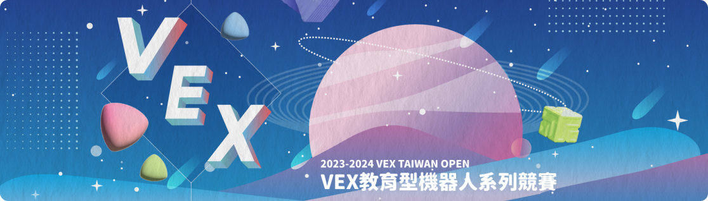
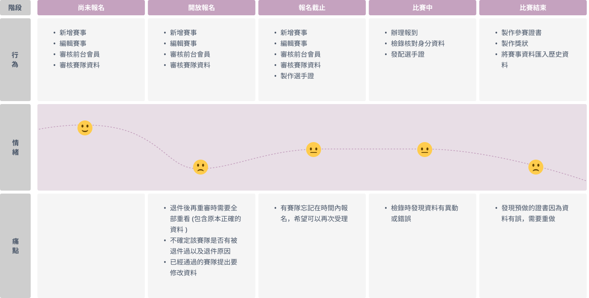
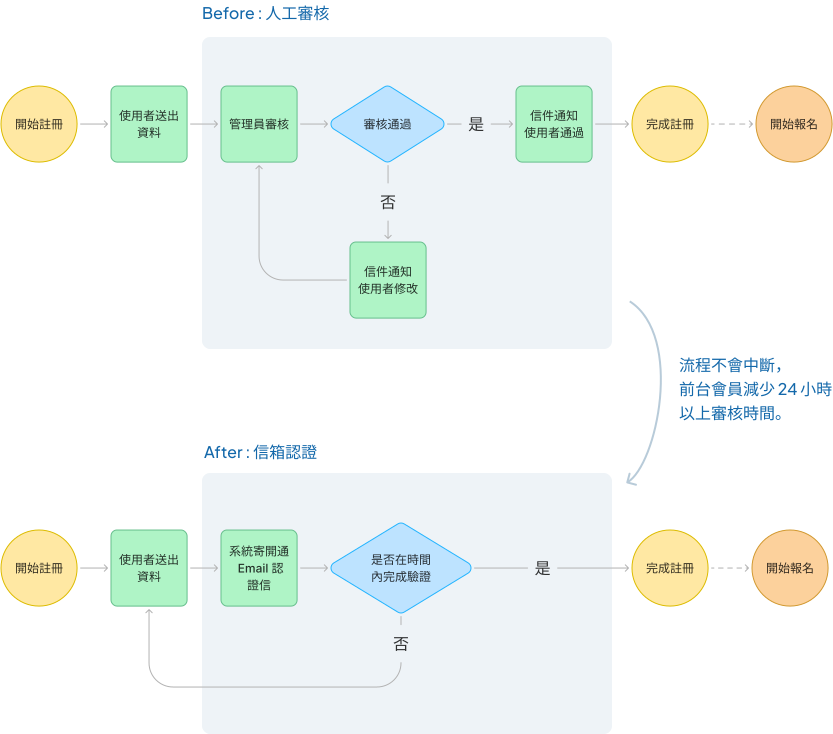
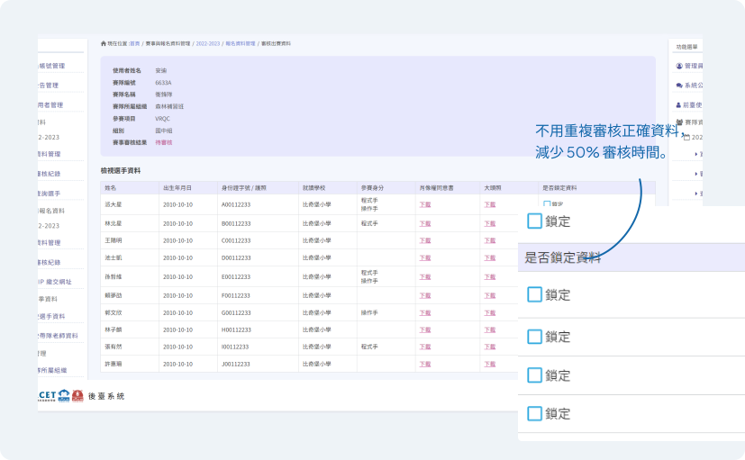
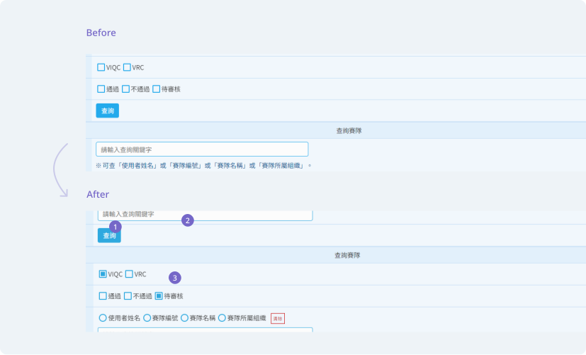
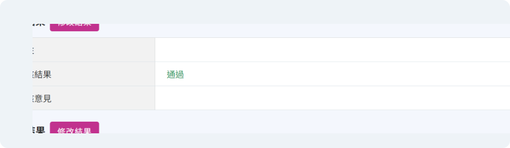
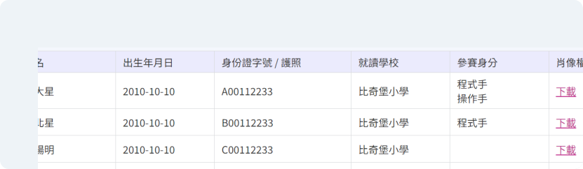

01 | 團隊目標
改版優化 VEX 賽隊管理系統，打造更適合且流暢的賽隊與賽事管理體驗。
02 | 角色與產出
在這個專案中，我與 PM 共同進行需求訪談，梳理關鍵需求與痛點；同時與另一位 UI 設計師協作，使用設計系統進行改版；完成 UI 設計與切版後交付給工程師，並在上線前協助系統測試。
03 | 專案挑戰
面對眾多且繁雜的改版需求，需在資源有限的情況下定義解決優先級，尤其很多需求是希望涵蓋邊緣情境，需近一步確認解決方案與工程可行性。
04 | 專案成果與影響
我們最終在四個月內順利改版上線，讓需求方在新的賽季使用，成功舉辦十三場系列賽事，受理近兩百隊賽隊報名，整體得到正面的反饋。
主辦方在新的賽季成功舉辦了 13 場系列賽事，總共受理 374 場報名次數。系統的優化提高主辦方籌辦與維護賽事的量能，同時獲得他們正面的回饋。
13
場系列賽事
194
賽隊數
374
報名次數
2018-2024 賽隊成長率
”謝謝妳那時耐心地一個個調整系統， 讓系統使用起來比 1.0 上手多了”
VEX 教育型機器人系列賽事參與年齡跨及小學至大學，並在全世界 60 多個國家有超過 24000 支賽隊持續參與，曾經在 2018 年獲得金氏世界紀錄，是世界最大規模的機器人比賽。
台灣負責推動與舉辦 VEX 賽事的中華資訊與科技教育學會，至今賽事規模越辦越大，為了因應逐年增加的報名賽隊，希望開發一個用於報名與檢錄的賽隊系統。
此系統在 2022 年建置完成，我也參與其中。歷經一整年完整的系列賽事後，我們對賽事主辦方進行需求訪談，收集了實務上的使用心得，在 2023 提出改版優化的需求。
1
了解用戶需求與痛點
進行需求訪談了解現有版本有哪些痛點與未被滿足的需求
2
定義問題與改版目標
與 PM 定義核心問題，並在時間內需優先完成哪些項目
3
發想解決方案
與 PM 及工程師討論解決方案與工程可行性
4
設計執行
使用設計系統進行介面設計與切版，最後協助團隊進行測試與品管
我與客戶進行需求訪談，並使用者旅程圖整理關鍵痛點。
我們發現
每年的 VEX 賽季是由一系列賽事所組成，且積分達標並得獎的隊伍會代表台灣到美國參加決賽，因此資料的正確性以及最大化保留參賽資格是需求方最重視的。
任務 1
審核流程的優化
設計決策 1
前台會員註冊改成信箱自動認證
前台會員的註冊動機是為了要「報名賽事」，舊版的人工審核會讓報名流程中斷。而管理者在乎的是「信箱正確」即可。因此改成開通信箱認證後即審核通過。讓前台會員可以一次完成註冊與報名，減去約 24 小時的等候時間。
設計決策 2
鎖定正確隊員資料後，再退給報名者修改
鎖定的資料不能再編輯，解決管理者一再審核重複資料的痛點，也讓報名者更快速分辨正確與待修改的欄位。
設計決策 3
優化搜尋功能，更精準更快的取得資料
實際了解使用情境與行為模式，提供符合的欄位與排序。
1 調整欄位順序，把必填的欄位放在最上面
2 必填欄位給予預設值，減少使用者操作錯誤的機率
3 關鍵字搜尋欄位更清楚的定義查找範圍

任務 2
在任何階段保留資料修改的彈性
設計決策
情境 : 報名未截止
修改審核結果，退回資料給報名者重新修正。
情境 : 報名已截止
為了避免流程混亂與其他報名者誤報，我們排除強制退回以及延長報名時間的做法，改由管理者從後台改。

任務 3
系統生成參賽證書與獎狀
設計決策
與工程師討論可行性後，引入 makepdf.js 套件，管理者可設定內容與字級等，最後一鍵生成參賽證書與獎狀。
同時我們考量到極限狀態，測試在最多字數、中英混雜的情境下不會跑版。
協助專案經理進行設計品管，包含兩個面向 :
將客戶需求化成工程師可理解的語言或畫面
在需求訪談會議上，我繪製 Wireframe 快速的將需求文字轉成圖面，來更精準地在會議上與需求方確認功能與流程的改版。也透過 Wireframe 跟工程師確認技術可行性。同時，另一位合作同事 Cruis ( UI Designer ) 是一位聾啞人士，也藉此達成更順暢的溝通。我主要負責設計文件的交付與 UI Flow 標註，我必須確保 :

透過需求矩陣協助團隊定義優先順序
在需求訪談的環節，我透過需求矩陣協助大家定義問題的難度與嚴重程度，並將需求排序，來更好的與需求方達成共識 : 在時間內完成「高優先」的功能開發。
採用設計系統
使用原子設計的概念，沿用公司既有的設計系統與後台架構，更順利的與另一位 UI Designer 協作，他主要負責前台介面，我負責後台介面。同時減少切版的時間。
在這個專案中花了相對比較多的時間在討論使用者需求與技術可行性之間的解決辦法，當時便透過直接在白板上畫出流程與 Wireframe 來確認雙方的需求，以利達成共識。這樣的作法打破公司慣有的開發流程，但卻實際解決溝通問題與減少開發時間。讓我認知到，設計師也許只是個名稱、標籤，我們真正在做的是懂得靈活用運設計工具與方法解決問題的角色。
這個專案經歷了與其他 UI 設計師合作，以及累積一年的使用心得，經歷第二版迭代優化，讓我理解原子設計的重要，可以讓設計、程式碼易於協作與善於維護擴充。同時這個經過迭代來更靠近使用者需求與核心目標的過程，讓我覺得設計產生了實際價值與意義。
目前改版的成果只有看見用戶數的提升，但我同時也想了解，在報名的流程時間是否縮短了?後台管理者在審核的時間是否減少了等等數據資料來判斷系統改版的成果。